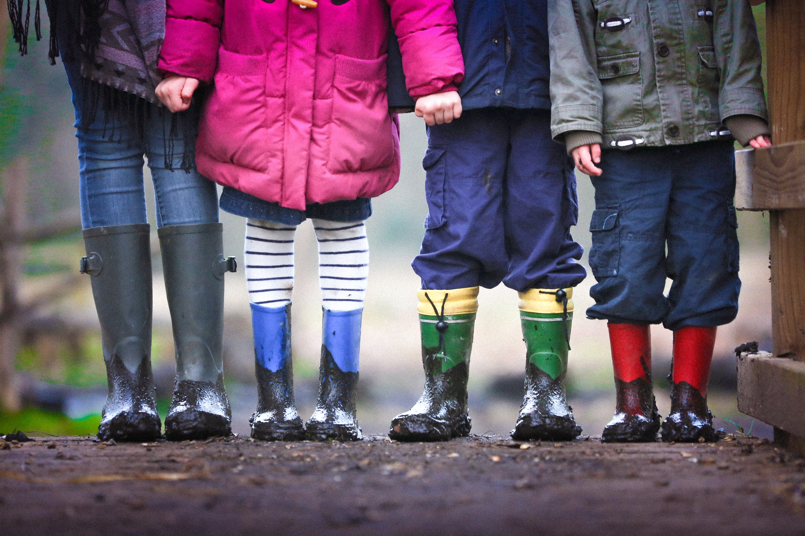
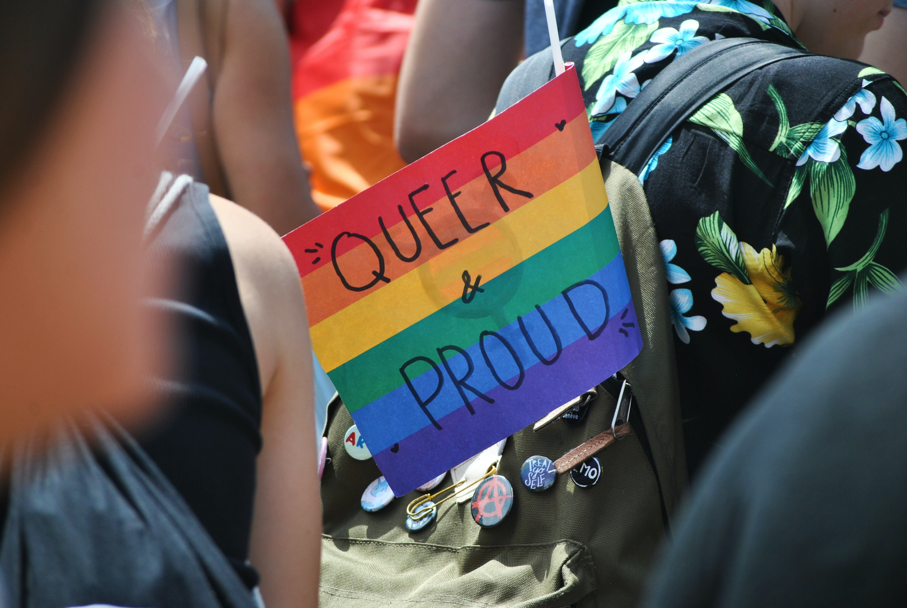

Groups Affected By Mental Health Issues
Anxiety, depression and suicide can affect any of us at any time. But at different points in our lives we can be at greater risk – when we're going through big changes such as becoming an adult, retiring, starting a family, or losing someone we love, for example.
Experiencing discrimination because of our sexuality, gender identity, ethnicity or religion can also cause psychological distress and make us much more vulnerable to depression and anxiety.
That’s why Beyond Blue provides information and resources to meet your specific needs, based on what you’re experiencing and your circumstances.
Mental health and wellbeing is established early in life and provides children with the foundation for all aspects of their development including physical, educational, social, emotional and cognitive development.

Over 75% of mental health issues occur before the age of 25, while suicide continues to cause the largest loss of life of young people in Australia.
Women are known for putting others first. But when it comes to your health it is important to prioritise your own needs and speak up when you need support.

Depression is common throughout the Australian population, and older people are more likely to experience contributing factors such as physical illness or personal loss.
Beyond Blue celebrates the strength, resilience and diversity of LGBTI communities. We believe that the recognition that marriage equality is an issue of equity was an important step towards improving the mental health of LGBTI people. Beyond Blue is proud to celebrate diversity and to have stood up for equality in our community.

Reducing the impact of depression and anxiety among Aboriginal and Torres Strait Islander communities is a priority for Beyond Blue. A range of research, information, education and support strategies have been developed and will continue to be developed in consultation with ATSI communities and organisations.
Key Statistics Of Different Groups
As different groups of people are affected by mental health issues, hence as each individual have unique circumstances, it creates different degrees of impact on people. However ultimately, mental health issue greatly impacts people's lives, especially among minority gorups in society:
- Aboriginal and Torres Strait Islander people are nearly twice as likely to die by suicide.
- One in ten young people aged 12-17 years old will self-harm, one in 13 will seriously consider a suicide attempt, and one in 40 will attempt suicide.
- One in seven young people aged 4 to 17 years experience a mental health condition in any given year.
- More women than men experience high or very high levels of psychological distress.
- One in six young LGBTI people has attempted suicide and one third have harmed themselves.
- 10-15% of older adults experience depression, and approximately 10 percent experience anxiety.
Help support BeyondBlue further through donation!

Contact us through these platforms!
- Call 1300 22 4636 (24 hours/7 days a week)
- Chat through our online service here (1pm-12am/7 days a week)
- Email us (Get a reply in 24 hours)
- Online forums (24 hours/7 days a week)
- Write to us for corporate and office enquiries only (GPO Box 1883 Melbourne VIC 3001 Australia Fax: 03 9810 6111)